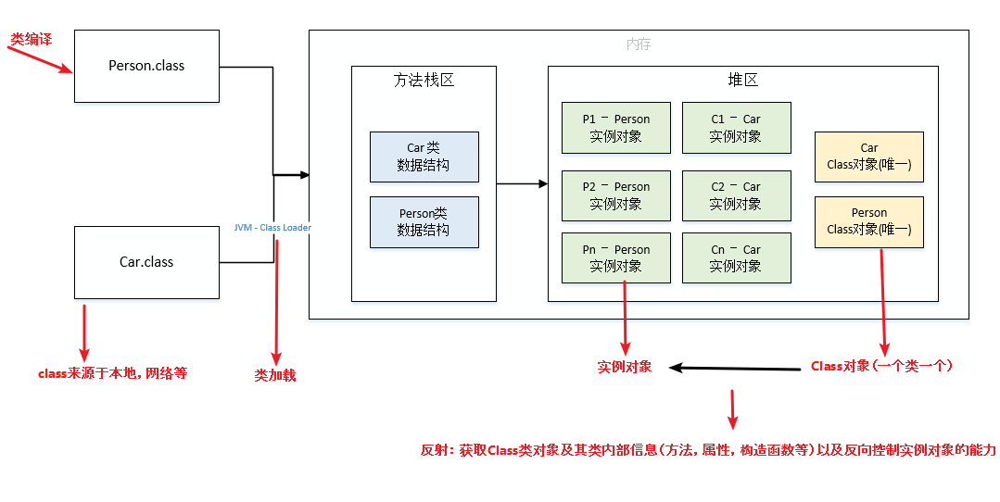

摘要：1. 基本语法、常量和变量（final、static 关键字）、数据类型、面向对象（封装、继承、多态、接口）； 2. 异常、泛型、反射、注解； 3. IO和序列化、Socket 网络编程、Stream 流、JDK 新特性； 4. 常用类。
[TOC]
Unsafe 类），更安全、方便；C++ 要手动释放内存，虽然可自由管理内存，但指针易导致：
JDK(Java Development Kit)，是一种功能齐全的 Java SDK，用于程序开发者创建、编译程序。
javac 编译器、jar 打包工具、javadoc 文档生成器、java-debuger（jdb）调试工具、javap -c 反汇编；JRE(JAVA Runtime Environment)：包含普通用户运行 Java 程序所需的全部内容。
JVM(JAVA Virtual Machine)：是一个用于执行Java 字节码的虚拟机进程，针对不同系统有特定的实现；实现一次编译，到处运行；如 HopSpot、JRockit、J9Vm；Oracle JDK、OpenJDK
注意：
true、false、 null 看起来像关键字，但实际上是字面值/量，同样也不可作为标识符。var、yield 和 record 是受限标识符，因为在某些上下文中是不允许的。instanceof 关键字：若对象为类（或接口、抽象类、父类）的实例，则返回 true。
见接口新增三个方法。
访问控制符：private、default、protected、public
public : 对所有类可见。protected : 对同一包内的类和所有子类可见。可以访问不同包的、从基类继承的 protected 变量、方法。
default（即默认，什么也不写）：在同一包内可见（只能访问同一包中的子孙类），不使用任何修饰符。private : 在同一类内可见。| 修饰符 | 使用对象 | 当前类 | 同一包内 | 子孙类（不同包） | 其他包 |
|---|---|---|---|---|---|
public |
类、接口、变量、方法 | Y | Y | Y | Y |
protected |
变量、方法，不能修饰类（外部类） | Y | Y | Y/N（说明），可以访问从基类继承的 | No |
default |
类、接口、变量、方法 | Y | Y | No | No |
private |
变量、方法，不能修饰类（外部类） | Y | No | No | No |
静态成员变量、非静态（实例）成员变量，局部变量（本地变量）
public class DataClass {
int age; // 成员变量/全局成员变量/实例变量
static String URL = "hello"; // 静态成员变量
static final String USER = "admin"; // 静态常量
}
final 核心思想：最终的、不可修改的；表示变量值不可变、方法不可覆盖、类不可继承。
修饰类：不可被继承（没有子类）：
/**
* 业务逻辑异常 Exception
*/
@Data
@EqualsAndHashCode(callSuper = true)
public final class ServiceException extends RuntimeException {
/**
* 业务错误码
* @see ServiceErrorCodeRange
*/
private Integer code;
/**
* 错误提示
*/
private String message;
}
修饰方法：不可重写，可重载。
作用：
private 方法都被隐式指定为 private [final] ；
修饰变量：值不可变。 => 成为常量。
实质上是常量。JDK1.8 后改为存放在堆内存中。
final String 类型的变量：使用前必须有且仅有一次初始化，初始化后值不可变；
Compiler Error: cannot assign a value to final variable）。// 访问静态常量
HelloWorld.PI;
public class HelloWorld {
// 修饰静态变量，即静态常量
public static final double PI = 3.14;
// 修饰成员变量，即成员常量
final int Y = 10;
public static void main(String[] args) {
// 修饰局部变量，即局部常量
final double X = 3.3;
}
}
在 foreach 语句中可用 final 声明存储循环元素的变量；
局部内部类和匿名内部类只能访问局部常量：因为外部类运行后局部变量会被回收，内部类延长局部变量 copy 的生命周期、用 final 保证二者一致。JDK1.8 后默认加 final。
static 修饰的成员属于类，可被类的所有对象共享，加 static 不影响作用域。
不依赖任何对象，在类加载时（在方法区）分配内存，可通过类名直接访问；
方便在没有创建对象的情况下调用方法/变量，如：
Objects.equals()；getInstance()、工厂模式的 create/build()、日志 Logger LOGGER = LoggerFactory.getLogger(Users.class) 等。实质上就是全局变量；
目的：作为共享变量使用；减少对象的创建；保留唯一副本。
执行顺序：静态代码块 –> 非静态代码块 –> 构造器。
定义在类中（方法外），用于初始化静态变量：不管创建多少对象，静态代码块都只执行一次；
非静态代码块与构造函数的区别：
static 只能修饰内部类。
非静态内部类在编译完成后会隐含地保存一个引用，指向创建它的外部类，但静态内部类没有。意味着：
如：AB-BA 死锁问题。
静态内部类用于定义 DTO 传参。
@Schema(description = "RPC 服务 - 商品 SKU 更新库存 Request DTO")
@Data
@NoArgsConstructor
@AllArgsConstructor
public class ProductSkuUpdateStockReqDTO {
@Schema(description = "商品 SKU 数组", requiredMode = Schema.RequiredMode.REQUIRED)
@NotNull(message = "商品 SKU 不能为空")
private List<Item> items;
@Data
public static class Item {
@Schema(description = "商品 SKU 编号", requiredMode = Schema.RequiredMode.REQUIRED, example = "1024")
@NotNull(message = "商品 SKU 编号不能为空")
private Long id;
@Schema(description = "库存变化数量", requiredMode = Schema.RequiredMode.REQUIRED, example = "100")
@NotNull(message = "库存变化数量不能为空")
private Integer incrCount; // 正数：增加库存；负数：扣减库存
}
}
1.5 后的新特性， 格式为：
import static；
可导入某个类中的指定静态资源，不需用类名即可直接调用（类中的）静态成员变量/方法等。
class MyClass {
// 所有实例共享
public final double f = Math.random(); // 只有第一次赋值起作用
public static double s = Math.random(); // 赋值后全局起作用
}
MyClass cls1 = new MyClass();
MyClass cls2 = new MyClass();
cls1.f == cls2.f; // false，两个f值不同
cls1.s == cls2.s; // true， 两个s值相同，实质是同一个值
private static final Logger LOGGER = LoggerFactory.getLogger(UmsAdmin.class);
基本数据类型和引用类型的区别主要在于：
基本数据类型都是直接存储在内存中的 Java 虚拟机栈上的。
primitive type，所占空间大小，默认值，取值范围。
基本数据类型对应的包装类型。
boolean 占用大小根据实现 JVM 不同有所差异，官方手册没有明确说明，逻辑上占1Byte：
char 2Byte ‘u0000’：0 ~ 65535.byte 即字节，1Byte 默认值0：取值范围 -128~127；short 2Byte 0：2^15-1 = 32,767；int 4Byte 0：2^31-1 = 2,147,483,647（21亿）；long 8Byte 0L：BigInteger类。float 4Byte 0F：double 8Byte 0D：long price = 12.2L
float price = 12.2F;
double price = 12.254(D);
reference type
引用类型继承于Object类（也是引用类型），都是按照Java里面存储对象的内存模型来进行数据存储的：
用作方法的参数和返回值的类型。
包装类（wrapper class），箱子；
List 和 Set 等要求存放的值必须为对象。都是用 final 修饰，无法继承。
基本数据类型对应的包装类型，及其放入（方法区中运行时）常量池的取值：
Boolean：TRUE/FALSE 两个常量，用于表示布尔值 true 和 false；
Boolean.TRUE.equals(createReqVO.getDefaultStatus())Character：[0, 127]，即7位ASCII码、最大7F Del；Byte Short **Integer** Long：[-128, 127]；Float、Double：不会进入常量池；String 类型：所有字面量都会进入常量池；包装类在常量池的值会复用已有对象的缓存数据，可直接用 == 判断；其它范围的值，必须全部用 equals() 比较。如：
Integer var = 40 在 -128 至 127 间的赋值，会自动装箱（转为包装类对象），Integer 对象通过 IntegerCache.cache 产生，会复用（缓存中的）已有对象；此区间外的所有数据都在堆上产生，不复用已有对象。Integer i2 = new Integer(40) 会直接创建新对象（手动装箱）。区别：
static 成员变量（存放在方法区），用作非 static 成员变量（存放在堆中）；null；包装类型若不赋值则为 null。从 JAVA SE5 开始引入自动装箱/拆箱机制 -> 将基本数据类型当成（对应包装类的）对象操作，使二者可方便的相互转换（一种面向对象的体现）：
自动拆箱的时机：
将包装类型变量直接赋值给对应基本数据类型时；
当要访问包装类对象的真实数据值时，如进行数学运算、比较大小、输出对象的值、三目运算符数据类型对齐。
缺点：
自动拆箱可能导致 NPE，需进行 NPE 检查。见下三目运算符。
Integer.valueOf(128)变量.intValue()// 装箱
Integer i1 = new Integer(128); // 手动装箱，基本数据类型 => 堆内存中的包装类对象
Integer i2 = 128; // 自动装箱，调用 Integer.valueOf(128); Double、Float的valueOf()类似
// 比较包装类对象
i1 == i2? // false，比较引用，常量池外的值不复用，两个不同对象的地址不同；若为[-128, 127]，则复用已有对象，地址相同，返回true
i1.equals(i2)? // true，不同对象的值相等
// 拆箱
int i3 = i2.intValue(); // 手动拆箱，包装类对象 => 基本数据类型
int i3 = i2; // 自动拆箱，调用 i2.intValue()/xxxValue()
// 初始值为不可达到的长度，s.length() + 1 也行
int subStrMinLen = Integer.MAX_VALUE;
继承自 Object 类的方法：
String str = "128"; // 内容为纯数字
Integer i1 = Integer.valueOf(str); // 字符串 => 包装类对象，类似手动装箱
String str = i1.toString(); // 包装类对象 => 字符串
// str 转为int
int i3 = Integer.valueOf(str); // 字符串 => 包装类对象 =>（自动拆箱）赋值给基本数据类型，（推荐，经典代码）
int i4 = Integer.parserInt(str); // 字符串 => 基本数据类型
/**
* 获得租户编号，从 header 中
* 考虑到其它 framework 组件也会使用到租户编号，所以不得不放在 WebFrameworkUtils 统一提供
* @param request 请求
* @return 租户编号
*/
public static Long getTenantId(HttpServletRequest request) {
String tenantId = request.getHeader(HEADER_TENANT_ID);
return NumberUtil.isNumber(tenantId) ? Long.valueOf(tenantId) : null;
}
自动类型转换：系统把某种基本类型的值直接赋给另一种基本类型的变量。
char => int -> long -> float -> double；byte -> short => int -> long -> float -> double；强制类型转换：把一个范围大的数值或变量赋给另一个范围小的变量。如将 float 类型的变量赋值给 int 变量。
条件表达式（三目运算符）condition ? 表达式1 : 表达式2 中，表达式1 和 2 在类型对齐时，可能抛出因自动拆箱（和强制类型转换）导致 NPE 异常。如表达式 1 或 表达式 2 的值：
Integer a = 1;
Integer b = 2;
Integer c = null;
Boolean flag = false;
// a*b的结果是int类型，那么c会强制拆箱成int类型，抛出NPE异常
Integer result = flag ? a * b : c;
都用于比较是否相等。区别：
== 比较；equals()比较；== 比较的是变量指向的内存地址是否相等，即引用是否相等。
对于 ==，因为 Java 只有值传递，所以不管是比较基本数据类型，还是引用数据类型的变量，其本质比较的都是值，只是引用类型变量存的值是对象的地址。
new 出来的对象，或经过赋值指向同一个对象，或（在字符串常量池中）指向同一块内存地址，才为 true，否则为 false。因为每 new 一次，都会重新开辟堆内存空间。null == null：返回 true，null 既不是对象也不是一种类型，仅是一种特殊的值；== 比较的是内存地址，equals() 比较的是值；== 和 equals() 比较的都是内存地址，没有重写 equals() 方法的类都是调用的 Object 的 equals() 方法。42 == 42.0? // 42.0下转型（窄化）为 int 42，返回true
== 比较大小的== 比较，会有浮点数精度陷阱，不精确；可以设置误差范围，或见 BigDecimal 类。equals() 用来比较两个对象（内存中）的内容是否相同，即对象是否相等。
==；==> equals() 继承自Object类，故每个对象都有 equals()，Object 中默认（直接调用 ==）对比两个对象的地址是否相等；==> 比较对象存储的内容是否相等。如 String类、包装类、Date类等；Objects.equals(null, "hello"); // 避免空指针异常
见 Java 集合框架文档中的 hashCode() VS equals() 部分。
重写 equals() 必须重写 hashCode()：保证 equals() 相同的对象哈希码也相同。
equals() 和 hashCode() 同时存在的意义：
equals() 保证可靠：比较对象（地址或内容）是绝对相等的；hashCode() 保证性能：用于获取哈希码（确定该对象在哈希表中的索引位置），通常用来将对象的内存地址转换为整数后返回；
否则违背了【两个相等的对象必须有相等的哈希码】这一 Java 关键约定，进而影响散列表、HashMap 等。
hashCode() 和 equals() 进行判断，所以 Set 存储的对象必须覆写这两种方法。hashCode() 和 equals() 方法，所以可以愉快地将 String 对象作为 key 来使用。String s1 = "ab"; // 将字面量"ab"放到常量池中，并将引用 s1 指向对象；推荐
String s2 = "ab"; // 在常量池查找到"ab"的地址，并赋给s2
s1 == s2? // true，s1和s2地址相同
s1.equal(s2)? // true，比较字符串的内容
String str1 = new String("ab"); // 在堆内存创建一个新对象，str1 引用指向新对象
String str2 = new String("ab"); // 在堆内存创建另一个新对象，str2 引用指向新对象
str1 == str2? // false，非同一对象
str1.equals(str2)? // true，对象的内容一样
s1 == str1? // false,s1是常量池中的对象的引用，str1是堆内存中的对象的引用，二者地址不同
s1.equals(str1)? // true，二者内容相同，重写 hashCode()
String str3 = str2; // 引用传递，指向堆内存中的同一对象
str3 == str2? // true
str3 == s1? // false
str3.equal(s1) // true
int[] arr = new int[5]; // 声明 + 动态初始化，程序员指定数组的长度，由系统初始化每个元素的默认值，此处 int 默认值为0
int[] num = new int[]{1, 2, 3, 5, 8}; // 一般不用
int[] num = {1,2,3,5,8}; // 声明 + 静态初始化，程序员显式指定每个元素的初始值，由系统决定数组的长度
// 三种长度
int n = nums.length; // 1. 数组的属性
int n = str.length(); // 2. String 对象的方法
// IDEA 的问题提示，工具栏和SonarLint 插件不建议使用显式类型实参
List<Integer> list = new ArrayList<>();
int n = list.size(); // 3. 泛型集合的方法，vector、List等
当指定的下标值超出数组的总长度时，会拋出 ArrayIndexOutOfBoundsException（数组越界异常）。
因为 Java 类与类间支持继承，可能产生一个数组里可存放多种数据类型的假象。
Array 类：提供静态方法，动态创建和访问数组。
int[] data = new int[10]; // 没有进行初始化，默认值为0
Array.set(data, 7, 6); // 设置data[7]=6
Arrays 类：提供静态方法，对数组进行操作。定义在 java.util 包中，主要实现数组元素的查找，内容填充、排序等。
// 以下静态方法均被 public static 修饰（省略）、均被重载多次，可用于各种类型的数组，如 float[]等
List asList(int[] a) // 将数组转为集合
List list = Arrays.asList(a); // 用法示例
boolean equals(int[] a, int[] a2) // 判断两个数组是否相等
String toString(int[] a) // 用于输出数组信息
void fill(int[] a, int val) // 将指定内容填充到数组中
int[] copyOf(int[] a, int n) // 拷贝，不改变参数内容，也可用于扩容
int[] copyOfRange(int[] a, int fromIndex, int toIndex) // 拷贝区间
void sort(int[] a) // 排序
// 对排序后的数组[fromIndex, toIndex]范围内进行二分检索。返回搜索值的索引；否则返回 -1
int binarySearch(int[] a, [int fromIndex, int toIndex,] int key) // 数组必须有序
Arrays.stream(); // 创建流
Object Oriented
根据 JVM 规范：”对象是动态分配的类实例或数组”。实例是内存中的对象。
抽象：指将一类对象的共同特征提取出来构造类，类是对象（实例）的抽象。一切皆对象。
Student stu1 = new Student("小刘", 22); // 显式创建对象
String str1 = "Hello"; // 隐式创建对象
String str2 = str1 + "Java";
// 匿名对象，对象只用一次，大多用作参数，需区别于单例模式
new Person("张三", 30).tell();
面向对象和面向过程的主要区别在于：解决问题的方式不同；
见面向对象思想文档。
面向对象思想主要包括：
---△——△——◇——◆--->——> ——定义：利用抽象数据类型将数据和基于数据的操作封装在一起，使其构成一个不可分割的独立实体。
优点：
继承：指子类可使用父类的所有属性和方法。子类 is a 父类。
继承的特点：
子类拥有父类所有的属性和方法（包括私有属性和私有方法），但无法访问父类中的私有属性和方法，仅拥有。
单继承（不支持多重继承）：程序结构更清晰、便于维护。多重继承会使类型转换、构造方法的调用顺序变复杂，影响性能。
对于父类的包访问权限、成员变量/方法，如果子类和父类在同一个包下，则子类能继承，否则子类不能继承；
区别：
RunTimeException）<= 父类（Exception）。public，而非 private）>= 父类（protected），即子类修饰符不能做更严格的限制；
private/final/static或构造器时（都不能被继承），子类不能重写，但被 static 修饰的方法能被再次声明。this 代表当前类对象的引用，指向本对象；super 代表对父类对象的引用，指向父类对象。
super 用于继承，主要用法：
super.成员变量/方法：用于在子类中，调用父类的同名成员变量或方法；super(param1, ...)：用于在子类构造器（的第一行），显式地调用父类构造器；
super()；super(param1, ...) 显式调用一次。多态：即一个接口，多个方法。
// 引用的自动类型转换，指存在继承关系的对象类型转换
Animal animal = new Dog(); // 向上转型，把Dog类型转换为Animal类型
animal.run();
// 引用的强制类型转换，编译正常，运行可能报错ClassCastException类型转换异常，建议在强转前判断对象的真实类型
Dog dog = (Dog) animal; // 向下转型，把Animal类型转换为Dog类型
animal.run();
Animal animal = new Cat();
if (animal instanceof Cat) {
Cat cat = (Cat) animal; // 向下转型
}
实现多态有 3 个必要条件：
优势：
劣势：
Java中没有指针的概念，类似的是引用。
Java 中方法参数的传递方式是值传递：
交换 String 对象的内容：

public class Person {
private String name;
// 省略构造函数、Getter/Setter方法
}
public static void swap(Person p1, Person p2) {
Person temp = p1;
p1 = p2;
p2 = temp; // p1、p1仅仅交换了存储的地址，不影响实参存储的地址
}
public static void swapName(Person p1, Person p2) {
String temp = p1.name;
p1.name = p2.name;
p2.name = temp; //交换了p1、p2的属性值，实参内容改变了。浅拷贝？
}
public static void main(String[] args) {
Person xiaoZhang = new Person("小张");
Person xiaoLi = new Person("小李");
// 值传递，不影响实参的指向/内容
swap(xiaoZhang, xiaoLi);
xiaoZhang.getName(); // 小张
xiaoLi.getName(); // 小李
//交换了p1、p2的属性值，实参内容改变了
swaNamep(xiaoZhang, xiaoLi);
xiaoZhang.getName(); // 小张
xiaoLi.getName(); // 小李
}
Java 中有三种类型的对象拷贝：

引用拷贝：在栈中创建一个变量副本，存储原变量所引用的对象（在堆中的）地址，不会创建对象副本。
浅拷贝（Shallow Copy）：在堆上创建一个原变量所引用的对象的副本，可修改对象副本内部的属性：
实现方法：在当前类中实现 Clonable 接口、并重写 Object 类的 protected clone()，在方法内直接调用父类的 clone() 方法，即 return super.clone()。


Class Son implements Cloneable {
String name;
Father father;
....
@Override
protected Son clone() throws CloneNotSupportedException {
return super.clone();
}
}
// 浅拷贝时
Father f = new Father("bigFather");
Son s1 = new Son("son1", 13);
s1.father = f;
Son s2 = s1.clone();
s1 == s2? // false，二者地址不同
s1.father == s2.father? // true，二者内的father对象地址相同，为同一个father
s1.name == s2.name? // true
s1.name = "son222"; // 改变s1.name指向的String对象
s1.name == s2.name? // false
// 深拷贝时，地址均不同，均返回false
深拷贝（Deep Copy）：深拷贝会完全复制整个对象，包括对象所包含的内部对象。比浅拷贝速度慢且花销大。为对象内的所有数据均创建副本：
通过序列化来实现深拷贝：适用于引用数量或层数太多时，原对象写入文件后拷贝给 clone 对象。
实现方法：在当前类中实现 Cloneable 接口并重写 clone()，在方法内 new 一个当前类的新对象，即 return new Student(name, subj.getName()); 。

// Father clone()方法
@Override
protected Father clone() throws CloneNotSupportedException {
return (Father) super.clone();
}
// Son clone()方法
@Override
protected Son clone() throws CloneNotSupportedException {
Son son = (Son) super.clone(); // 待返回克隆的对象
son.name = new String(name);
son.father = father.clone();
return son;
}
// 地址均不同，均返回false
延迟拷贝（Lazy Copy）：二者组合
接口（interface）是用来被实现的（implements 实现类），没有构造器。
JDK1.8 前接口中只有：
public abstract；JDK1.8 后新增三个方法：
default 修饰，即实例方法；@FeignClient(name = ApiConstants.NAME)
@Tag(name = "RPC 服务 - 文件")
public interface FileApi {
String PREFIX = ApiConstants.PREFIX + "/file";
/**
* 保存文件，并返回文件的访问路径
*
* @param content 文件内容
* @return 文件路径
*/
default String createFile(byte[] content) {
return createFile(content, null, null, null);
}
....
/**
* 保存文件，并返回文件的访问路径
*
* @param content 文件内容
* @param name 文件名称，允许空
* @param directory 目录，允许空
* @param type 文件的 MIME 类型，允许空
* @return 文件路径
*/
default String createFile(@NotEmpty(message = "文件内容不能为空") byte[] content,
String name, String directory, String type) {
return createFile(new FileCreateReqDTO().setName(name).setDirectory(directory).setType(type).setContent(content)).getCheckedData();
}
@PostMapping(PREFIX + "/create")
@Operation(summary = "保存文件，并返回文件的访问路径")
CommonResult<String> createFile(@Valid @RequestBody FileCreateReqDTO createReqDTO);
....
}
抽象类（abstract class）：包含抽象方法的类，不能用来创建对象。
抽象类的意义（代码复用）：
同：
default 关键字在接口中定义默认方法）。异：
public static finial 修饰（JDK1.8 后默认为default），实际是常量，不能被修改且必须有初始值。public abstract方法定义，）不能有方法的具体实现。private, protected, public 修饰；接口只能用 public。public static，只加载一次，寄生和宿主的关系；只能访问外部类的静态成员。Outter.Inner o = new Outter().new Inner();public static void method2(String arg1, String... args) {
// ....
}
sum(1, 2, 4);
sum(new int[] {1, 2, 4});

顶级父类 java.lang.Throwable：将异常层层抛给顶层，统一处理。
Error：程序无法处理的错误，无法通过 catch 捕获，只能尽量避免。发生时 JVM 一般会终止线程。
Java Virtual Machine Error：JVM 运行错误。OutOfMemoryError：OOM 内存溢出，见 JVM 文档。StackOverFlowError：栈溢出。NoClassDefFoundError：类定义错误。AssertionErrorIOErrorException：程序本身可处理的异常，可通过 try-catch 捕获。包括：
checked exception（编译时、受检查异常）：代码还没运行，编译器就会检查，并要求必须处理的异常；如果不处理，程序就不能编译通过。
除了RuntimeException及其子类以外都是 checked exception。必须要对这段代码 try...catch，或 throws exception。
IOExceptionClassNotFoundException：如果 JVM 在反序列化时找不到该类，则抛出此异常。SQLExceptionInterruptedException：线程被另一个线程中断；IllegalAccessException：访问类被拒绝；NoSuchMethodException：通过反射机制调用的方法不存在；unchecked exceptions（不受检查异常）：即使不处理也可正常通过编译。
RunTimeException （运行时异常）及其子类；日常开发中经常用到。即通常所说的异常。
NullPointerException(NPE)：需进行 NPE 检查，使用 JDK8 的 Optional 类来防止 NPE 问题。可能出现 NPE 的有：
public int getXxx() { return Integer 对象; }；
SELECT IF(ISNULL(SUM(col)), 0, SUM(col)) FROM table;HashMap、CurrentHashMap、HashTable、TreeMap）的 Key/Value是否允许存储 null 值；obj.getA().getB().getC()，一连串调用；ArrayIndexOutOfBoundsException：数组下标越界；ArrayStoreException：向类型不兼容的数组元素赋值；ClassCastException：类型转换异常；MethodArgumentNotValidException：Hibenate Validator 验证框架 @Valid 参数验证失败；NumberFormateExceptionArithmeticException：算数错误；SecurityException ：安全错误，如权限不够；UnsupportedOperationException：不支持的操作错误，如重复创建同一用户；RejectedExecutionException：线程池拒绝策略；/**
* 处理所有异常，主要是提供给 Filter 使用
* 因为 Filter 不走 SpringMVC 的流程，但是我们又需要兜底处理异常，所以这里提供一个全量的异常处理过程，保持逻辑统一。
* @param request 请求
* @param ex 异常
* @return 通用返回
*/
public CommonResult<?> allExceptionHandler(HttpServletRequest request, Throwable ex) {
if (ex instanceof MissingServletRequestParameterException) {
return missingServletRequestParameterExceptionHandler((MissingServletRequestParameterException) ex);
}
//
if (ex instanceof MethodArgumentTypeMismatchException) {
return methodArgumentTypeMismatchExceptionHandler((MethodArgumentTypeMismatchException) ex);
}
//
if (ex instanceof MethodArgumentNotValidException) {
return methodArgumentNotValidExceptionExceptionHandler((MethodArgumentNotValidException) ex);
}
if (ex instanceof BindException) {
return bindExceptionHandler((BindException) ex);
}
if (ex instanceof ConstraintViolationException) {
return constraintViolationExceptionHandler((ConstraintViolationException) ex);
}
//
if (ex instanceof ValidationException) {
return validationException((ValidationException) ex);
}
if (ex instanceof MaxUploadSizeExceededException) {
return maxUploadSizeExceededExceptionHandler((MaxUploadSizeExceededException) ex);
}
if (ex instanceof NoHandlerFoundException) {
return noHandlerFoundExceptionHandler((NoHandlerFoundException) ex);
}
//
if (ex instanceof HttpRequestMethodNotSupportedException) {
return httpRequestMethodNotSupportedExceptionHandler((HttpRequestMethodNotSupportedException) ex);
}
if (ex instanceof HttpMediaTypeNotSupportedException) {
return httpMediaTypeNotSupportedExceptionHandler((HttpMediaTypeNotSupportedException) ex);
}
//
if (ex instanceof ServiceException) {
return serviceExceptionHandler((ServiceException) ex);
}
if (ex instanceof AccessDeniedException) {
return accessDeniedExceptionHandler(request, (AccessDeniedException) ex);
}
// 特殊：如果是 ServiceException 的异常，则直接返回 forlai
// 例如说：https://gitee.com/zhijiantianya/yudao-cloud/issues/ICSSRM、https://gitee.com/zhijiantianya/yudao-cloud/issues/ICT6FM
if (ex.getCause() != null && ex.getCause() instanceof ServiceException) {
return serviceExceptionHandler((ServiceException) ex.getCause());
}
return defaultExceptionHandler(request, ex);
}
void printStackTrace()：在控制台上打印 Throwable 对象封装的异常信息；String getMessage()：返回异常发生时的简要描述；
String getLocalizedMessage()：默认返回getMessage()；若用 Throwable 的子类覆盖此方法，返回异常对象的本地化信息。ExceptionUtil.getMessage(e)String toString()：返回异常发生时的详细信息；ex.getCause()：返回此异常的原因。当原因不存在或未知时，返回 null。private void buildExceptionLog(ApiErrorLogCreateReqDTO errorLog, HttpServletRequest request, Throwable e) {
// 处理用户信息
errorLog.setUserId(WebFrameworkUtils.getLoginUserId(request));
errorLog.setUserType(WebFrameworkUtils.getLoginUserType(request));
// 设置异常字段
errorLog.setExceptionName(e.getClass().getName());
errorLog.setExceptionMessage(ExceptionUtil.getMessage(e));
errorLog.setExceptionRootCauseMessage(ExceptionUtil.getRootCauseMessage(e));
errorLog.setExceptionStackTrace(ExceptionUtil.stacktraceToString(e));
StackTraceElement[] stackTraceElements = e.getStackTrace();
Assert.notEmpty(stackTraceElements, "异常 stackTraceElements 不能为空");
StackTraceElement stackTraceElement = stackTraceElements[0];
errorLog.setExceptionClassName(stackTraceElement.getClassName());
errorLog.setExceptionFileName(stackTraceElement.getFileName());
errorLog.setExceptionMethodName(stackTraceElement.getMethodName());
errorLog.setExceptionLineNumber(stackTraceElement.getLineNumber());
// 设置其它字段
errorLog.setTraceId(TracerUtils.getTraceId());
errorLog.setApplicationName(applicationName);
errorLog.setRequestUrl(request.getRequestURI());
Map<String, Object> requestParams = MapUtil.<String, Object>builder()
.put("query", ServletUtils.getParamMap(request))
.put("body", ServletUtils.getBody(request)).build();
errorLog.setRequestParams(JsonUtils.toJsonString(requestParams));
errorLog.setRequestMethod(request.getMethod());
errorLog.setUserAgent(ServletUtils.getUserAgent(request));
errorLog.setUserIp(ServletUtils.getClientIP(request));
errorLog.setExceptionTime(LocalDateTime.now());
}
try 块： 用于捕获异常。其后可接多个 catch 块；如果没有 catch 块，则必须跟一个 finally 块。
catch 块 ：用于处理 try 捕获到的异常。
throw 块：一般用在方法内部（出现异常的地方），由开发者定义，当程序语句出现问题后，创建异常对象并（立即主动）抛出异常（提交给 JVM）。
throws：一般用在方法声明上，代表可能会抛出的异常列表。finally 块：无论是否捕获或处理异常，语句最终一定执行；当在 try 块或 catch 块中遇到 return 语句时，在方法返回前执行。常用于回收、释放资源。
finally 块，而是直接结束：
System.exit(0)；return：当 try 和 finally 语句中都有 return 语句时，finally 块中的会覆盖 try/catch 中的。try {
System.out.println("1.Try to do something");
throw new RuntimeException("2.RuntimeException");
} catch (Exception e) {
System.out.println("3.Catch Exception -> " + e.getMessage());
} finally {
System.out.println("4.Finally");
}
// 输出：
// 1.Try to do something
// 3.Catch Exception -> 2.RuntimeException
// 4.Finally
try{
} catch (FileNotFoundException e) {
// 打印异常堆栈
e.printStackTrace();
} catch (Exception e) {
e.printStackTrace();
}
Java 7 之后，面对必须要关闭的资源，应优先使用 try-with-resources 而不是try-finally。
代码更简短、清晰，产生的异常对也更有用。
类似于InputStream、OutputStream 、Scanner 、PrintWriter 等资源调用close()方法来手动关闭。
try (Scanner scanner = new Scanner(new File("test.txt"))) {
while (scanner.hasNext()) {
System.out.println(scanner.nextLine());
}
} catch (FileNotFoundException fnfe) {
fnfe.printStackTrace();
}
泛型（Generics）参数：即参数化类型：<数据类型>。编译器可对泛型参数进行检测，通过泛型参数**指定**传入的对象类型。
E，T，K，V，?（通配符）表示，用于对象具体类型不确定的情况。ArraryList<BMW> 和ArraryList<BENZ> 与 ArraryList<Car>无关。例如：
CommonResult<T> 通过参数 T 可根据具体的返回类型、动态指定结果的数据类型；Excel 处理类 ExcelUtil<T> 用于动态指定 Excel 导出的数据类型；Collections 中的 sort, binarySearch 方法）。3种使用方式：
// 泛型接口
public interface Generator<E> {
public T method();
}
// 泛型的上下限：
// 泛型通配符<? extends T>来接收返回的数据，此写法的泛型集合不能使用 add 方法；
// 而<? super T>不能使用 get() 方法，两者在接口调用赋值时易出错。
public static void run(ArrayList<? extends Car>) {
}
public static void run(ArrayList<? super Car>) {
}
反射：（在运行期/时）获取Class 类对象及其类内部详细信息（成员方法、属性、构造函数等）、及反向控制实例对象的能力。
将（类/接口的）.class 字节码文件加载进 JVM （的方法区）时，会（在堆中）创建一个对应的 java.lang.Class 对象，用来映射类中的各种成分。

多用于框架的底层原理，是框架的灵魂。通过反射可在运行时分析类及执行类中方法，获取、调用任意一个类的所有属性和方法。
Proxy.newProxyInstance() ）没有实现类、但在运行期动态创建接口对象的方式。通过 Proxy 创建代理对象，然后将接口方法“代理”给 InvocationHandler 完成的。<resultMap> 元素。@Component 注解声明一个类为 Spring Bean、 通过 @Value 注解就读取到配置文件中的值：基于反射分析类，获取到类/属性/方法/参数上的注解，之后就可做进一步的处理。toString() 里重写并打印类信息。优点 ：代码更灵活；为各种框架提供开箱即用的功能提供便利；
缺点 ：不安全。如，可无视（发生在编译时的）泛型参数的安全检查；性能稍差。
获取 Class 对象的方式有：
（一般不知道具体类），知道具体类的情况下：类名.class。Class 对象不会进行初始化（不执行静态代码块和静态对象）；
实例对象.getClass()，继承自 Object.getClass()；
Class.forName("类的全限定名")；
通过类加载器xxxClassLoader.loadClass(类路径？)。Class 对象不会进行初始化。
private static final Logger LOGGER = LoggerFactory.getLogger(UmsAdmin.class);
ClassLoader.getSystemClassLoader().loadClass("cn.javaguide.User");
可通过以下类调用反射API（JavaGuide 反射的一些基本操作）：
Class 类Class 类：可获得（Class 对象所表示的）类的属性、方法，是一个 Java 中的泛型类型。
常用方法有：
Class<?> getClass()：获取类引用；getName()：获取全限定类名；
getSimpleName()：获取类名，用于 toString() 打印 POJOs 的类名；newInstance()：实例化；Class getSuperclass()：获取父类类型；获取构造器、字段和方法：后续再用 Construct 类、Filed 类、Method 类处理。
Fileds[] getFileds()
Field getField(String name)：获取公有字段；getDeclaredFields：用于获取所有声明的字段，包括公有和私有字段；Construct 类Construct 类：获取（Class对象所表示的）类的构造方法，可在运行时动态创建对象。
Field 类Field 类：获取（Class对象所表示的）类的成员变量，及对它的（运行时）动态修改权限（包含private）。
setAccessible(true)：为了调用 private 方法而取消安全检查；String 类的定义；getName()：返回字段名称，如"id"；getType()：返回字段类型，也是一个Class实例，如，String.class；int getModifiers()：返回字段的修饰符，不同的bit表示不同的含义。Method 类Method 类：获取（Class对象所表示的）类的成员方法，可动态调用对象的方法（包含private）。
Object invoke(Object obj, Object... args)：JVM 调用包装在当前 Method 对象obj 中的方法，并传入方法调用的参数 args。
null；getName()：返回方法名称，如："getScore"；getReturnType()：返回方法返回值类型，也是一个Class实例，如：String.class；getParameterTypes()：返回方法的参数类型，是一个Class数组，如：{String.class, int.class}；int getModifiers()：返回方法的修饰符，不同的bit表示不同的含义。/**
* 建立和插入关系表操作
*
* @param dao 可以操作的dao
* @param dataList 要插入的数据
* @param productId 建立关系的id
*/
private void relateAndInsertList(Object dao, List dataList, Long productId) {
try {
if (CollectionUtils.isEmpty(dataList)) return;
for (Object item : dataList) {
Method setId = item.getClass().getMethod("setId", Long.class);
setId.invoke(item, (Long) null);
}
Method insertList = dao.getClass().getMethod("insertList", List.class);
insertList.invoke(dao, dataList);
/**
* 获取指定参数，并对参数进行修改
*/
Class<?> targetClass = Class.forName("cn.javaguide.User");
Field field = targetClass.getDeclaredField("value");
// 为了对类中的参数进行修改，取消安全检查
field.setAccessible(true); //
field.set(targetObject, "JavaGuide");
field.setAccessible(false);
} catch (Exception e) {
LOGGER.warn("创建产品出错:{}", e.getMessage());
throw new RuntimeException(e.getMessage());
}
}
invoke0() 执行；Annotation （注解）：是 Java5 开始引入的新特性，可看作是一种特殊的注释，本质是继承了 Annotation 特殊接口。
注解只有被解析后才会生效，常见的解析方法有两种：
@Override 注解：编译器在编译时就会检测当前的方法是否重写了父类对应的方法。@Value 、@Component）。JDK 内置注解：
由编译器使用的注解，作用在代码上。如：
@Override：检查该方法是否正确实现了覆写；@Deprecated：标记过时（已弃用）方法。如果使用该方法，会报编译警告；@SuppressWarnings：告诉编译器忽略此处代码产生的警告；元注解：作用在其他注解上的注解，用于定义其它注解（ @interface 类型的类）。
@Target：标记注解作用在哪种成员上：
/** Class, interface (including annotation type), or enum declaration */
TYPE,
FIELD, METHOD, PARAMETER,
CONSTRUCTOR,
LOCAL_VARIABLE,
ANNOTATION_TYPE,
PACKAGE,
// since 1.8
TYPE_PARAMETER,
TYPE_USE
@Retention(RetentionPolicy.SOURCE)：标识注解怎么保存：
SOURCE：只在源代码中；CLASS：编入class文件中；RUNTIME：在运行时可通过反射访问。@Documented：标记注解是否包含在用户文档中。
@Inherited：标记注解继承于哪个类（默认没有继承于任何父类）。
@Target({ElementType.FIELD, ElementType.TYPE})
@Retention(RetentionPolicy.SOURCE)
public @interface Setter {
}
从 Java 7 开始，额外添加了 3 个注解：
@SafeVarargs： 忽略任何使用参数为泛型变量的方法或构造函数调用产生的警告。@FunctionalInterface：Java 8 开始支持，标识匿名函数或函数式接口。@Repeatable：Java 8 开始支持，标识注解可在同一个声明上使用多次。在程序运行期能读取的注解。在加载后一直存在于JVM中，最常用。如：
@PostConstruct标注的方法会在调用构造方法后自动被调用（这是 Java 代码读取该注解实现的功能，JVM 并不会识别该注解）。目的：持久化 Java 对象，将对象存储到文件系统、数据库、内存中，或通过网络传输对象；
ClassNotFoundException 异常。整个过程都是 JVM 独立的：
序列化和反序列化，对应 OSI 七层协议模型中的表示层、属于 TCP/IP 四层模型中应用层的一部分：
常见序列化协议：
JSON、XML
JDK 自带序列化的实现：
几乎不直接用此方式，主要原因有：
- 不支持跨语言调用；
- 相比于其他序列化框架性能更差，序列化后的字节数组体积较大，导致传输成本加大。
java.io.Serializable 接口：
// CommonResult.java
public class CommonResult<T> implements Serializable {
public static Integer CODE_SUCCESS = 0;
private Integer code;
private String message;
private T data;
...
}
@transient作用：阻止实例中（用 trasient 修饰的）属性序列化；当对象被反序列化时，被 transient 修饰的变量值不会被持久化和恢复。
对象中如果有属性不想被序列化，可以属性前添加关键字 transient、或使用 @transient 修饰。
serialVersionUID：适用于JAVA序列化机制。简单来说，通过判断类的serialVersionUID来验证版本一致。
serialVersionUID：在反序列化时，JVM 会把传来的字节流中的 serialVersionUID 与本地相应实体类的（serialVersionUID）进行比较，
InvalidCastException。serialVersionUID 字段，避免反序列失败；如果完全不兼容升级，避免反序列化混乱，需修改。private static final long serialVersionUID = 1L;
IO 即 Input/Output，输入和输出。
IO 流在 Java 中分为输入流和输出流，而根据数据的处理方式又分为字节流和字符流。
Java IO 流的 4 个抽象类基类：
InputStream（字节输入流）：用于从源头（通常是文件）读取数据（字节信息）到内存中；
read() 方法：返回输入流中下一个字节的数据。FileInputStream：常用的字节输入流对象，指定文件路径，可直接读取单字节数据，也可读取至字节数组中。通常会配合 BufferedInputStream。BufferedInputStream（字节缓冲输入流）：不是一个一个字节的读取，而是先将读取到的字节存放在缓存区，并从内部缓冲区中单独读取字节。
BufferedInputStream 内部维护了一个缓冲区，通过源码可知实际就是一个字节数组。OutputStream（字节输出流）
BufferedOutputStream（字节缓冲输出流）：缓冲流将数据加载至缓冲区，一次性读取/写入多个字节，从而避免频繁的 IO 操作，提高流的传输效率。Reader（字符输入流）：
BufferedReader （字符缓冲输入流）Writer（字符输出流）：
BufferedWriter（字符缓冲输出流）ObjectInputStream 类和
ObjectOutputStream类
public final Object writeObject() throws IOException 方法：序列化一个对象，并发送到输出流；//?public final Object readObject() throws IOException, ClassNotFoundException 方法：从流中取出下一个对象，并反序列化。
Employee e = new Employee();
e.name = "Reyan Ali";
FileOutputStream fileOut = new FileOutputStream("/tmp/employee.ser");
ObjectOutputStream objOut = new ObjectOutputStream(fileOut);
objOut.writeObject(e);
objOut.close();
fileOut.close();
FileInputStream fileIn = new FileInputStream("/tmp/employee.ser");
ObjectInputStream objIn = new ObjectInputStream(fileIn);
e = (Employee) objIn.readObject();
....

日常开发过程中接触最多的就是 磁盘 IO（读写文件） 和 网络 IO（网络请求和响应）。
I/O 模型：
BIO(Blocking I/O)Non-blocking/New I/O)：支持面向缓冲，基于通道的 I/O 操作方法。 用于高负载、高并发的（网络）应用；
Asynchronous I/O)Spring MVC 中的 WebSocket
新增了 java.util.stream 包。
Stream（流）是一个（来自数据源的）元素队列并支持聚合操作。流是一种新的数据处理模型，可以对数据进行并行处理，提高程序的性能。
filter, map, reduce, find, match, sorted 等。Stream 可以执行非常复杂的查找、过滤和映射数据等操作。使用Stream API 对集合数据进行操作，就类似于使用 SQL 执行的数据库查询。
特点：
参考：玩转 Java8 Stream 流，常用方法，详细用法大合集！
| 短路操作： 指遇到某些符合条件的元素就可以得到最终结果。如 A | B，只要A为true，则无需判断B的结果。 |

在 Java 8 中，生成流的方法有：
Collection下的Stream stream() 、parallelStream()方法：为集合创建串行、并行流。Arrays.stream()方法：将数组转换成流。of()、iterate()、generate()。BufferedReader.lines() 方法，将每行内容转成流。Pattern.splitAsStream() 方法，将字符串分隔成流。List<String> list = new ArrayList<>();
Stream<String> stream = list.stream(); //获取一个顺序流
Stream<String> parallelStream = list.parallelStream(); //获取一个并行流
List<String> strings = Arrays.asList("abc", "", "bc", "efg", "abcd","", "jkl");
// 获取空字符串的数量
long count = strings.parallelStream().filter(string -> string.isEmpty()).count();
Array.Stream()返回的是一个元素序列，且支持顺序和并行的聚合操作。Integer[] nums = new Integer[10];
Stream<Integer> stream = Arrays.stream(nums);
of()、iterate()、generate()Stream<Integer> stream = Stream.of(1,2,3,4,5,6);
Stream<Integer> stream2 = Stream.iterate(0, (x) -> x + 2).limit(6);
stream2.forEach(System.out::println); // 0 2 4 6 8 10
Stream<Double> stream3 = Stream.generate(Math::random).limit(2);
stream3.forEach(System.out::println);
BufferedReader reader = new BufferedReader(new FileReader("F:\\test_stream.txt"));
Stream<String> lineStream = reader.lines();
lineStream.forEach(System.out::println);
Pattern pattern = Pattern.compile(",");
Stream<String> stringStream = pattern.splitAsStream("a,b,c,d");
stringStream.forEach(System.out::println);
无状态： 指元素的处理不受之前元素的影响；
用于通过设置的条件过滤出元素。过滤流中的某些元素。
List<String>strings = Arrays.asList("abc", "", "bc", "efg", "abcd","", "jkl");
// 获取空字符串的数量
long count = strings.stream().filter(string -> string.isEmpty()).count();
map() 用法：将流中的元素转换为另外一个流中的元素，转换前后元素个数不变。
@Override
public void delResourceListByRole(Long roleId) {
UmsAdminRoleRelationExample example = new UmsAdminRoleRelationExample();
example.createCriteria().andRoleIdEqualTo(roleId);
List<UmsAdminRoleRelation> relationList = adminRoleRelationMapper.selectByExample(example);
if (CollUtil.isNotEmpty(relationList)) {
String keyPrefix = REDIS_DATABASE + ":" + REDIS_KEY_RESOURCE_LIST + ":";
// 将keyPrefix + relation.getAdminId()放到list中
List<String> keys = relationList.stream()
.map(relation -> keyPrefix + relation.getAdminId())
.collect(Collectors.toList());
redisService.del(keys);
}
}
List<String> list = Arrays.asList("a,b,c", "1,2,3");
//将每个元素转成一个新的且不带逗号的元素
Stream<String> s1 = list.stream().map(s -> s.replaceAll(",", ""));
s1.forEach(System.out::println); // abc 123
Stream<String> s3 = list.stream().flatMap(s -> {
//将每个元素转换成一个stream
String[] split = s.split(",");
Stream<String> s2 = Arrays.stream(split);
return s2;
});
s3.forEach(System.out::println); // a b c 1 2 3
peek：如同于map，能得到流中的每一个元素。
Student s1 = new Student("aa", 10);
Student s2 = new Student("bb", 20);
List<Student> studentList = Arrays.asList(s1, s2);
studentList.stream()
.peek(o -> o.setAge(100))
.forEach(System.out::println);
//结果：
Student{name='aa', age=100}
Student{name='bb', age=100}
有状态： 指该操作只有拿到所有元素之后才能继续下去。
Stream<Integer> stream = Stream.of(6, 4, 6, 7, 3, 9, 8, 10, 12, 14, 14);
Stream<Integer> newStream = stream.filter(s -> s > 5) //6 6 7 9 8 10 12 14 14
.distinct() //6 7 9 8 10 12 14
.skip(2) //9 8 10 12 14
.limit(2); //9 8
newStream.forEach(System.out::println);
distinct：通过流中元素的 hashCode() 和 equals() 去除重复元素。
sorted()：自然排序，流中元素需实现Compareable接口sorted(Comparator com)：定制排序，自定义Comparator排序器sorted 方法用于对流进行排序。
// 对输出的 10 个随机数进行排序
Random random = new Random(); random.ints().limit(10).sorted().forEach(System.out::println);
List<String> list = Arrays.asList("aa", "ff", "dd");
//String 类自身已实现Compareable接口
list.stream().sorted().forEach(System.out::println);// aa dd ff
Student s1 = new Student("aa", 10);
Student s2 = new Student("bb", 20);
Student s3 = new Student("aa", 30);
Student s4 = new Student("dd", 40);
List<Student> studentList = Arrays.asList(s1, s2, s3, s4);
//自定义排序：先按姓名升序，姓名相同则按年龄升序
studentList.stream().sorted(
(o1, o2) -> {
if (o1.getName().equals(o2.getName())) {
return o1.getAge() - o2.getAge();
} else {
return o1.getName().compareTo(o2.getName());
}
}
).forEach(System.out::println);
limit 方法用于获取指定数量的流。 limit(n)：获取n个元素。
// 打印出 10 条数据
Random random = new Random();
random.ints().limit(10).forEach(System.out::println);
skip(n)：跳过n元素，配合limit(n)可实现分页。
非短路操作： 指必须处理所有元素才能得到最终结果；
用来迭代流中的每个数据。
// 输出10个随机数
Random random = new Random();
random.ints().limit(10).forEach(System.out::println);
Collection<String> toMails;
if (CollUtil.isNotEmpty(toMails)) {
toMails.stream().filter(Validator::isEmail).forEach(toMailSet::add);
}
@AllArgsConstructor
@Getter
public enum UserTypeEnum implements ArrayValuable<Integer> {
MEMBER(1, "会员"), // 面向 c 端，普通用户
ADMIN(2, "管理员"); // 面向 b 端，管理后台
public static final Integer[] ARRAYS = Arrays.stream(values())
.map(UserTypeEnum::getValue)
.toArray(Integer[]::new);
private final Integer value;
private final String name;
}
Optional<T> reduce(BinaryOperator<T> accumulator)：
T reduce(T identity, BinaryOperator<T> accumulator)：流程跟上面一样，只是第一次执行时，accumulator函数的第一个参数为identity，而第二个参数为流中的第一个元素。<U> U reduce(U identity,BiFunction<U, ? super T, U> accumulator,BinaryOperator<U> combiner)：
fork join出多个线程进行执行，此时每个线程的执行流程就跟第二个方法reduce(identity,accumulator)一样，而第三个参数combiner函数，则是将每个线程的执行结果当成一个新的流，然后使用第一个方法reduce(accumulator)流程进行规约。//经过测试，当元素个数小于24时，并行时线程数等于元素个数，当大于等于24时，并行时线程数为16
List<Integer> list = Arrays.asList(1, 2, 3, 4, 5, 6, 7, 8, 9, 10, 11, 12, 13, 14, 15, 16, 17, 18, 19, 20, 21, 22, 23, 24);
Integer v = list.stream().reduce((x1, x2) -> x1 + x2).get();
System.out.println(v); // 300
Integer v1 = list.stream().reduce(10, (x1, x2) -> x1 + x2);
System.out.println(v1); //310
Integer v2 = list.stream().reduce(0,
(x1, x2) -> {
System.out.println("stream accumulator: x1:" + x1 + " x2:" + x2);
return x1 - x2;
},
(x1, x2) -> {
System.out.println("stream combiner: x1:" + x1 + " x2:" + x2);
return x1 * x2;
});
System.out.println(v2); // -300
Integer v3 = list.parallelStream().reduce(0,
(x1, x2) -> {
System.out.println("parallelStream accumulator: x1:" + x1 + " x2:" + x2);
return x1 - x2;
},
(x1, x2) -> {
System.out.println("parallelStream combiner: x1:" + x1 + " x2:" + x2);
return x1 * x2;
});
System.out.println(v3); //197474048
collect：接收一个Collector实例，将流中元素收集成另外一个数据结构。
Collector<T, A, R> 是一个接口，有以下5个抽象方法：
Supplier<A> supplier()：创建一个结果容器A
BiConsumer<A, T> accumulator()：消费型接口，第一个参数为容器A，第二个参数为流中元素T。
BinaryOperator<A> combiner()：函数接口，该参数的作用跟上一个方法(reduce)中的combiner参数一样，将并行流中各个子进程的运行结果(accumulator函数操作后的容器A)进行合并。
Function<A, R> finisher()：函数式接口，参数为：容器A，返回类型为：collect方法最终想要的结果R。
Set<Characteristics> characteristics()：返回一个不可变的Set集合，用来表明该Collector的特征。有以下三个特征：
CONCURRENT：表示此收集器支持并发。（官方文档还有其他描述，暂时没去探索，故不作过多翻译）UNORDERED：表示该收集操作不会保留流中元素原有的顺序。IDENTITY_FINISH：表示finisher参数只是标识而已，可忽略。
Collector工具库：Collectors。Java8引入了流(Stream)处理，新类java.util.stream.Collectors。
实现了很多归约操作。
Collectors.toList()：将流转换成集合Collectors.toSet()Collectors.toMap(Student::getName, Student::getAge)Collectors.joining()Collectors.counting()Collectors.maxBy(Integer::compare)Collectors.summingInt(Student::getAge)Collectors.averagingDouble(Student::getAge)Collectors.groupingBy(Student::getAge)：分组Collectors.partitioningBy(v -> v.getAge() > 10)：分区Collectors.reducing(Integer::sum)：规约Student s1 = new Student("aa", 10, 1);
Student s2 = new Student("bb", 20, 2);
Student s3 = new Student("cc", 10, 3);
List<Student> list = Arrays.asList(s1, s2, s3);
//装成list
// Student::getAge ?
List<Integer> ageList = list.stream().map(Student::getAge).collect(Collectors.toList()); // [10, 20, 10]
//转成set
Set<Integer> ageSet = list.stream().map(Student::getAge).collect(Collectors.toSet()); // [20, 10]
//转成map,注:key不能相同，否则报错
Map<String, Integer> studentMap = list.stream().collect(Collectors.toMap(Student::getName, Student::getAge)); // {cc=10, bb=20, aa=10}
//字符串用分隔符连接
String joinName = list.stream().map(Student::getName).collect(Collectors.joining(",", "(", ")")); // (aa,bb,cc)
//聚合操作
//1.学生总数
Long count = list.stream().collect(Collectors.counting()); // 3
//2.最大年龄 (最小的minBy同理)
Integer maxAge = list.stream().map(Student::getAge).collect(Collectors.maxBy(Integer::compare)).get(); // 20
//3.所有人的年龄
Integer sumAge = list.stream().collect(Collectors.summingInt(Student::getAge)); // 40
//4.平均年龄
Double averageAge = list.stream().collect(Collectors.averagingDouble(Student::getAge)); // 13.333333333333334
// 带上以上所有方法
DoubleSummaryStatistics statistics = list.stream().collect(Collectors.summarizingDouble(Student::getAge));
System.out.println("count:" + statistics.getCount() + ",max:" + statistics.getMax() + ",sum:" + statistics.getSum() + ",average:" + statistics.getAverage());
//分组
Map<Integer, List<Student>> ageMap = list.stream().collect(Collectors.groupingBy(Student::getAge));
//多重分组,先根据类型分再根据年龄分
Map<Integer, Map<Integer, List<Student>>> typeAgeMap = list.stream().collect(Collectors.groupingBy(Student::getType, Collectors.groupingBy(Student::getAge)));
//分区
//分成两部分，一部分大于10岁，一部分小于等于10岁
Map<Boolean, List<Student>> partMap = list.stream().collect(Collectors.partitioningBy(v -> v.getAge() > 10));
//规约
Integer allAge = list.stream().map(Student::getAge).collect(Collectors.reducing(Integer::sum)).get(); //40
Collectors.toList()Collectors.toList()方法用于将流转换为列表(List)。这个方法在处理数据过滤、映射等操作后，能方便地收集结果到列表中。
Collectors.toList()，可以得到一个新的只包含符合条件的数的列表。这是一个高效且灵活的编程方式。List<String> strings = Arrays.asList("abc", "", "bc", "efg", "abcd","", "jkl");
List<String> filtered = strings.stream().filter(string -> !string.isEmpty()).collect(Collectors.toList());
System.out.println("筛选列表: " + filtered);
String mergedString = strings.stream().filter(string -> !string.isEmpty()).collect(Collectors.joining(", "));
System.out.println("合并字符串: " + mergedString);
Collectors.toSet() //转为Set
public static <T, U> Set<U> convertSet(Collection<T> from, Function<T, U> func) {
if (CollUtil.isEmpty(from)) {
return new HashSet<>();
}
//筛选列表，转为set
return from.stream().map(func).filter(Objects::nonNull).collect(Collectors.toSet());
}
count：返回流中元素的总个数。max：返回流中元素最大值。min：返回流中元素最小值。List<Integer> list = Arrays.asList(1, 2, 3, 4, 5);
long count = list.stream().count(); //5
Integer max = list.stream().max(Integer::compareTo).get(); //5
Integer min = list.stream().min(Integer::compareTo).get(); //1
产生统计结果的收集器。主要用于int、double、long等基本类型上，可以用来产生类似如下的统计结果。
List<Integer> numbers = Arrays.asList(3, 2, 2, 3, 7, 3, 5);
IntSummaryStatistics stats = numbers.stream().mapToInt((x) -> x).summaryStatistics();
System.out.println("列表中最大的数 : " + stats.getMax());
System.out.println("列表中最小的数 : " + stats.getMin());
System.out.println("所有数之和 : " + stats.getSum());
System.out.println("平均数 : " + stats.getAverage());
| 短路操作： 指遇到某些符合条件的元素就可以得到最终结果。如 A | B，只要A为true，则无需判断B的结果。 |
List<Integer> list = Arrays.asList(1, 2, 3, 4, 5);
boolean allMatch = list.stream().allMatch(e -> e > 10); //false
boolean noneMatch = list.stream().noneMatch(e -> e > 10); //true
boolean anyMatch = list.stream().anyMatch(e -> e > 4); //true
Integer findFirst = list.stream().findFirst().get(); //1
Integer findAny = list.stream().findAny().get(); //1
allMatch()：接收一个 Predicate 函数，当流中每个元素都符合该断言时才返回true，否则返回falsenoneMatch()：接收一个 Predicate 函数，当流中每个元素都不符合该断言时才返回true，否则返回falseanyMatch()：接收一个 Predicate 函数，只要流中有一个元素满足该断言则返回true，否则返回falsefindFirst：返回流中第一个元素findAny：返回流中的任意元素default 或 static 修饰，这样就可有方法体，实现类也不必重写此方法。用于：
语法格式
(parameters) -> expression 或
(parameters) -> { statements; }
新增了 java.util.stream 包。
Stream（流）是一个来自数据源的元素队列并支持聚合操作。流是一种新的数据处理模型，可以对数据进行并行处理，提高程序的性能。
用于解决 NPE 问题。
SimpleDateFormat 类，而Java 8 后只需 LocalDate、LocalTime、LocalDateTime的 of 或 parse 方法；Date；现在 JDBC 时间类型和 Java8 时间类型对应关系是：
Date —> LocalDate；Time —> LocalTime；Timestamp —> LocalDateTime。java.time.ZonedDateTime 来表示带时区的时间，可看成是 LocalDateTime + ZoneId。详细方法见 Java 集合框架文档中。
import java.util.Collections;
//创建可变的列表
Arrays.asList(nums);
int min = (int) Collections.min(Arrays.asList(numbers));
int n = 10;
Collections.nCopies(n, 0);
// 交换 nums[0] 和 nums[1]
Collections.swap(nums, 0, 1);
类中的方法及作用
如果定义类时并未显式指定父类，则默认继承 java.lang.Object 类：
toString()：默认返回（带包的）类全名@当前对象在堆内存的地址（类的名字实例的哈希码 16 进制字符串），通常重写来返回对象的内容；如"org.webtree.www.User@Hello"。
equals()：默认比较 2 个对象的内存地址是否相等，String 类对该方法进行了重写，用于比较字符串的内容是否相等。
// 方法一：
@Override
public boolean equals(Object obj) {
if (obj instanceof Student) {
Student stu = (Student)obj;
return this.name.equals(stu.name); // this.name 无判空
} else {
return false;
}
}
// 方法二：Lombok 插件自动生成
clone()：用于创建并返回当前对象的一份拷贝。慎用，默认是浅拷贝，若想实现深拷贝需覆写 clone() 方法实现成员对象的深度遍历式拷贝。
finalize()：实例被垃圾回收器回收时触发的操作；当 GC 准备好释放对象占用空间时，首先会调用 finalize()，并在下一次垃圾回收动作发生时真正回收对象占用的内存。
// native 方法
// 用于返回当前运行时对象的 Class 对象，使用了 final 关键字修饰，故不允许子类重写。
public final native Class<?> getClass()
// 用于返回对象的哈希码，主要用在哈希表中，如 JDK 中的 HashMap。
public native int hashCode()
Objects.equals(o1, o2); // 推荐
// 字符不是字母和数字的情况，用于忽略空格和标点
if (!Character.isLetterOrDigit(s.charAt(left))) {
left++;
}
// 判断二者是否相等，忽略大小写
Character.toLowerCase(s.charAt(left));
str = Character.toString(‘c’);
String类有11种构造方法：
String 是用 private final 修饰的字符数组保存，每次都创建新对象（多了会导致性能降低）。String 类是不可变类，一旦创建，其值不可改变，适用于不常改变长度的字符串，str.length()。
private 修饰符：表示值不会被外部修改。其实可通过反射机制改变值。final：表示 char 数组的引用地址不可变。二者配合可以保证用 String 类声明的对象的值不可变。
private [final] char value[];
// 通过反射修改String中的字符
String str = “Hello World”;
// 获取String类中的value字段
Field val = String.class.getDeclaredField(“value”);
// 改变value属性的访问权限
val.setAccessible(true);
// 获取s对象上的属性value数组
char[] value = (char[]) val.get(str);
// 改变value所引用的数组中的第5个字符
value[5] = ‘_’; // 变为 Hello_World
String t = value.toString(); //?
运算符重载：Java 语言本身并不支持运算符重载，+ 和 += 是专门为 String 类重载过的运算符，也是 Java 中仅有的两个重载过的运算符。
String.intern() 是一个 native（本地）方法，作用是将指定的字符串对象的引用保存在字符串常量池中，可简单分为两种情况：如果字符串常量池中
String s1 = "ab"; // 将字面量"ab"放到常量池中，并将引用变量 s1 指向常量池中字面量的地址；推荐
String str1 = new String("ab"); // 在堆内存创建一个新对象，a 引用指向新对象
s1 != str1 // s1是常量池中的对象的引用，str1 是堆内存中的对象的引用，二者地址不同
s1.equals(str1) // true，二者内容相同，重写 hashCode()
// 字符数组
char value[] = { ’H‘, ’e‘, ’l‘, ’l‘, ’o‘ };
char[] value = ; // 均可
String str = new String(value); // 用字符数组构造字符串对象
String str = String.valueOf(value);
一、好处：
使 JVM 可实现字符串常量池：复制 String 变量、new 同一字面量、不同的（字符串）变量指向相同的字面量，都是指向字符串常量池中（同一内存地址的）同一对象。字符串常量池的好处：
hashcode 的唯一性：创建 String 时 hashcode 就被缓存了，不必每次重新计算，处理速度快，很适合作为 Map 的键。二、缺点：每次修改 String 对象都会产生新对象，占用内存。如 String 对象的 + 拼接操作直接生成新常量，并把 String 对象引用指向新常量。
字符常量 VS 字符串常量
形式：字符常量 char 是单引号引起的一个字符，属于基本类型变量；字符串常量 final String 是双引号引起的 0 或若干个字符，属于对象。二者可相互转换。
// char 在 Java 中占两个字节
char ch = ‘a’;
String str = “hello”;
// char 和 String 相互转换
char ch = str.charAt(0);
str = Character.toString(‘c’);
str = new Character(‘c’).toString();
str = “” + ‘c’;
含义：字符常量相当于一个整型值（ASCII 值），可进行表达式运算；字符串常量代表（该字符串在内存中存放位置的）地址值。
占内存大小：字符常量只占 2 个字节；字符串常量取决于长度。
String VS final String
// 字面量"hello2"是常量，存入字符串常量池中;
// a为变量，指向常量池中字面量的地址
String a = "hello2";
// b为编译期常量，指向常量池中的地址
final String b = "hello";
// c为变量
String c = "hello";
// true，b是常量，在编译期间就计算出了b+2=”hello2”，在常量池中找到已有地址，与a相同
a == b + 2;
// false，c是变量，在编译期间不能确定其值，在堆中新建对象”hello”？，+运算得到新变量 “hello2”，二者地址不同
a == c + 2;
Java 提供了两个可变字符串类 StringBuilder 和 StringBuffer。
StringBuffer 是线程安全的，方法都是 synchronized 修饰的，适用于多线程在字符串缓冲区中操作大量数据。StringBuilder 则没有实现线程安全功能、非线程安全的，所以性能略高。适用于单线程在字符串缓冲区中操作大量数据。因此在通常情况下，如果需要创建一个内容可变的字符串对象，则应该优先考虑使用 StringBuilder 类。
StringBuffer 就是为了解决大量拼接字符串时产生很多临时对象问题而提供的一个类。它提供了 append 和 add 方法，可以将字符串添加到已有序列的末尾或指定位置。本质是一个线程安全的可修改的字符序列。
在很多情况下字符串拼接操作不需要线程安全，所以可以选择 StringBuilder。
+ 拼接 String 对象，实际上是通过创建 StringBuilder 调用 append() 方法实现的，最后调用 toString() 得到一个新 String 对象 。StringBuilder 重载了 toString() ，在调用该类对象时自动返回一个字符串，用 System.out.println(对象名) 可打印出来。+ 拼接 String 对象，会导致创建过多的 StringBuilder 临时对象，造成内存资源浪费。可直接使用 StringBuilder 调用 append() 方法代替。// 转为StringBuilder对象
String str = "num is:";
// 1.[X] 通过强制类型转换
StringBuilder strBuilder = (StringBuilder)str;
// 2. 通过构造函数
StringBuilder strBuilder = new StringBuilder(str);
for (int i = 0; i < 1000; i++) {
strBuilder.append(','); // 用`+`会产生大量临时StringBuilder对象
strBuilder.append(i);
}
// 替换指定下标位置的单个字符；
strBuilder.setCharAt(1, 'X');
return strBuilder.toString();
参考：
获判转替合，货盘转提盒
int length() ：字符数；char charAt(int index)：返回指定索引处的 char；
StringIndexOutOfBoundsException（下标越界异常）；int indexOf(**int** ch, [int fromIndex])：从指定位置开始，获取 ch 第一次出现的索引；未找到 ch 则返回 -1；
int indexOf(**String** str, [int fromIndex])
lastIndexOf()：同 indexOf；
String substring(begin, [end])：切片，截取指定位置 [begin,end) 的新子串。String[] split(String regex, [int limit])：根据正则匹配切割/拆分，需检查最后一个分隔符后有无内容，否则长度不及预期、会有抛出 IndexOutOfBoundsException 的风险。
String str = "a,b,c,,";
String[] ary = str.split(",");
// 预期长度为5，其实第4、5个为空，未放入结果数组，实际长度等于 3
System.out.println(ary.length);
boolean isEmpty(): 是否有内容。原理是判断字符串长度是否为0；boolean equals(str)：判断字符串内容是否相同。重写了 Object 类中的 equals()，只判断字符串内容是否相同；需对当前字符串判空；
boolean equalsIgnoreCase()：忽略大小写，判断内容是否相同；boolean contains(str): 是否包含子串；
if (str.indexOf(str) != -1)，区别：后者可获取子串出现的位置。boolean startsWith(String prefix)：是否以指定前缀开头；
boolean endsWith(String suffix)；int compareTo(str)：比较两字符串的字典顺序，基于字符的 Unicode 值。相等返回 0；小于str参数，返回负数。char[] toCharArray()：将字符串转成字符数组，常用于遍历 for(char ch : str.toCharArray()){}byte[] getBytes()：将字符串转成字节数组；
String(byte[])：将字节数组转成字符串；String toUpperCase()：将字符串全部转成大写；
String toLowerCase()static String String.valueOf(int/double)： 将基本数据类型 int/double 转成字符串；自动装箱。操作都不是在原有的字符串对象上进行的，而是生成了新的 String 对象，然后将原 String 的变量引用指向新对象。
String replace(char old, char new)：如果被替换的字符不存在，则返回原串；
String replace(" ","")：消除字符串的所有空格；String trim()：删除字符串的头尾空白符；String replaceAll(String regex, String replaceStr)：用 replaceStr 替换所有正则匹配到的子串。
String replaceFirst(String regex, String replaceStr)：只替换匹配的第一个子串。String concat(String str): 将 str 拼接到结尾，不能拼接其他类型，二者都不能为 null，否则运行时会报空指针异常 NPE（编译时不报错）。
+：可拼接字符、数字、字符串等数据类型；String.join(String ",", List<String> wordList)：合并 List，并插入逗号；abs()ceil()：取上限floor()pow(2, 3)round(4.9999)计算机表示的时间是以整数表示的时间戳存储的，即 Epoch Time，Java使用long型来表示以毫秒为单位的时间戳，通过System.currentTimeMillis()获取当前时间戳。
Java标准库有两套处理日期和时间的API：
Date、Calendar和TimeZone这几个类。位于在java.util包里面LocalDateTime、ZonedDateTime、ZoneId等。是在Java 8引入的，定义在java.time这个包里面。为什么会有新旧两套API呢？
java.util.Date是用于表示一个日期和时间的对象.
java.sql.Date区分，后者用在数据库中。Date的源码，可以发现它实际上存储了一个long类型的以毫秒表示的时间戳：基本用法：
import java.util.*;
//import java.util.Date;
// 获取当前时间:
Date date = new Date();
date.getYear() + 1900; // 必须加上1900
date.getMonth() + 1; // 0~11，必须加上1
date.getDate(); // 1~31，不能加1
// 转换为String:
date.toString();
// 转换为GMT时区:
date.toGMTString();
// 转换为本地时区:
date.toLocaleString());
// 以自定义的格式输出
var sdf = new SimpleDateFormat("yyyy-MM-dd HH:mm:ss");
var sdf = new SimpleDateFormat("E MMM dd, yyyy"); //Sun Sep 15, 2019
sdf.format(date);
Data d = new Date();
long ts = d.getTime(); // 时间戳
// 获取当前毫秒数，而不是 new Date().getTime()
long startTime = System.currentTimeMillis();
SimpleDateFormate sdf = new SimpleDateFormate("yyyy-MM-dd HH:mm:ss EEE a"); //统一为 GMT
String rs = sdf.format(d);
String rs2 = sdf.format(ts);
sdf.parse("2019-09-11");
package cn.hutool.core.date;
Date created = claims.get(CLAIM_KEY_CREATED, Date.class);
Date refreshDate = new Date();
//刷新时间在创建时间的指定时间内
if(refreshDate.after(created) && refreshDate.before(DateUtil.offsetSecond(created,time))){
return true;
}
注意：
getYear()返回的年份必须加上1900，getMonth()返回的月份是0~11分别表示``1~12`月，所以要加1，getDate()返回的日期范围是1~31，又不能加1。打印本地时区表示的日期和时间时，不同的计算机可能会有不同的结果。如果想要针对用户的偏好精确地控制日期和时间的格式，就可以使用SimpleDateFormat对一个Date进行转换。
MMM和E为例。用预定义的字符串表示格式化：
M：输出9MM：输出09MMM：输出SepMMMM：输出SeptemberDate对象有几个严重的问题：
toGMTString()可以按GMT+0:00输出外，Date总是以当前计算机系统的默认时区为基础进行输出。Calendar可以用于获取并设置年、月、日、时、分、秒，和Date比，主要多了一个可以做简单的日期和时间运算的功能。
基本用法：
import java.util.*;
public class Main {
public static void main(String[] args) {
// 获取当前时间:
Calendar c = Calendar.getInstance(); // 只有一种方式获取
int y = c.get(Calendar.YEAR);
int m = 1 + c.get(Calendar.MONTH);
int d = c.get(Calendar.DAY_OF_MONTH);
int w = c.get(Calendar.DAY_OF_WEEK);
int hh = c.get(Calendar.HOUR_OF_DAY);
int mm = c.get(Calendar.MINUTE);
int ss = c.get(Calendar.SECOND);
int ms = c.get(Calendar.MILLISECOND);
System.out.println(y + "-" + m + "-" + d + " " + w + " " + hh + ":" + mm + ":" + ss + "." + ms);
Calendar calendar = Calendar.getInstance();
calendar.add(Calendar.YEAR, 71); // after 71 year
calendar.set(2020, 1, 26);
calendar.add(Calendar.DATE, daysOfThisYear); // 一年后
}
}
注意到Calendar获取年月日这些信息变成了get(int field)，
1~7分别表示周日，周一，……，周六。Calendar只有一种方式获取，即Calendar.getInstance()，而且一获取到就是当前时间。如果想给它设置成特定的一个日期和时间，就必须先清除所有字段：
import java.text.*;
import java.util.*;
// 当前时间:
Calendar c = Calendar.getInstance();
// 清除所有:
c.clear();
// 设置2019年:
c.set(Calendar.YEAR, 2019);
// 设置9月:注意8表示9月:
c.set(Calendar.MONTH, 8);
// 设置2日:
c.set(Calendar.DATE, 2);
// 设置时间:
c.set(Calendar.HOUR_OF_DAY, 21);
c.set(Calendar.MINUTE, 22);
c.set(Calendar.SECOND, 23);
System.out.println(new SimpleDateFormat("yyyy-MM-dd HH:mm:ss").format(c.getTime()));
// 2019-09-02 21:22:23
利用Calendar.getTime()可以将一个Calendar对象转换成Date对象，然后就可以用SimpleDateFormat进行格式化了。
与 Calendar和Date相比，提供了时区转换的功能。时区用TimeZone对象表示：
import java.util.*;
public class Main {
public static void main(String[] args) {
TimeZone tzDefault = TimeZone.getDefault(); // 当前时区
TimeZone tzGMT9 = TimeZone.getTimeZone("GMT+09:00"); // GMT+9:00时区
TimeZone tzNY = TimeZone.getTimeZone("America/New_York"); // 纽约时区
System.out.println(tzDefault.getID()); // Asia/Shanghai
System.out.println(tzGMT9.getID()); // GMT+09:00
System.out.println(tzNY.getID()); // America/New_York
}
}
时区的唯一标识是以字符串表示的ID，获取指定TimeZone对象也是以这个ID为参数获取，GMT+09:00、Asia/Shanghai都是有效的时区ID。
TimeZone.getAvailableIDs()。有了时区，就可以对指定时间进行转换。例如，下面的例子演示了如何将北京时间2019-11-20 8:15:00转换为纽约时间：
import java.text.*;
import java.util.*;
public class Main {
public static void main(String[] args) {
// 当前时间:
Calendar c = Calendar.getInstance();
// 清除所有:
c.clear();
// 设置为北京时区:
c.setTimeZone(TimeZone.getTimeZone("Asia/Shanghai"));
// 设置年月日时分秒:
c.set(2019, 10 /* 11月 */, 20, 8, 15, 0);
// 显示时间:
var sdf = new SimpleDateFormat("yyyy-MM-dd HH:mm:ss");
sdf.setTimeZone(TimeZone.getTimeZone("America/New_York"));
System.out.println(sdf.format(c.getTime()));
// 2019-11-19 19:15:00
}
}
可见，利用Calendar进行时区转换的步骤是：
SimpleDateFormat并设定目标时区；Date对象（注意Date对象无时区信息，时区信息存储在SimpleDateFormat中）。因此，本质上时区转换只能通过SimpleDateFormat在显示的时候完成。
Calendar也可以对日期和时间进行简单的加减：
import java.text.*;
import java.util.*;
public class Main {
public static void main(String[] args) {
// 当前时间:
Calendar c = Calendar.getInstance();
// 清除所有:
c.clear();
// 设置年月日时分秒:
c.set(2019, 10 /* 11月 */, 20, 8, 15, 0);
// 加5天并减去2小时:
c.add(Calendar.DAY_OF_MONTH, 5);
c.add(Calendar.HOUR_OF_DAY, -2);
// 显示时间:
var sdf = new SimpleDateFormat("yyyy-MM-dd HH:mm:ss");
Date d = c.getTime();
System.out.println(sdf.format(d));
// 2019-11-25 6:15:00
}
}
java.time从 Java 8开始，java.time包提供了新的日期和时间API
其中，本地日期和时间 LocalDate、LocalTime、LocalDateTime是新API里的基础对象，绝大多数操作都是围绕这几个对象来进行的：三者都是没有时区、不可变、并且线程安全的
以及一套新的用于取代SimpleDateFormat的格式化类型DateTimeFormatter。
SimpleDateFormat：是线程不安全的类，一般不定义为 static 变量。如果定义为 static，必须加锁，或用 DateUtils 工具类。不同的时区，在同一时刻，本地时间是不同的。
新时间日期API常用、重要对象介绍：
ZonedDateTime：带时区的日期和时间ZoneId，ZoneOffset: 时区ID，用来确定Instant和LocalDateTime互相转换的规则Instant: 时刻，用来表示时间线上的一个点（瞬时）Clock: 用于访问当前时刻、日期、时间，用到时区Duration: 时间间隔，用秒和纳秒表示时间的数量（长短），用于计算两个日期的“时间”间隔Period: 用于计算两个“日期”间隔为什么需要 LocalDate、LocalTime、LocalDateTime
Tue Sep 10 09:34:04 CST 2019其它改变：
不可变对象：
LocalDate、LocalTime、LocalDateTime、Instant为不可变对象，修改这些对象对象会返回一个副本。
LocalDate是日期处理类，具体API如下：
// 获取当前日期
LocalDate now = LocalDate.now();
// 设置日期
LocalDate localDate = LocalDate.of(2019, 9, 10);
// 获取年
int year = localDate.getYear(); //结果：2019
int year1 = localDate.get(ChronoField.YEAR); //结果：2019
// 获取月
Month month = localDate.getMonth(); // 结果：SEPTEMBER
int month1 = localDate.get(ChronoField.MONTH_OF_YEAR); //结果：9
// 获取日
int day = localDate.getDayOfMonth(); //结果：10
int day1 = localDate.get(ChronoField.DAY_OF_MONTH); // 结果：10
// 获取星期
DayOfWeek dayOfWeek = localDate.getDayOfWeek(); //结果：TUESDAY
int dayOfWeek1 = localDate.get(ChronoField.DAY_OF_WEEK); //结果：2
// 获取今年的天数 365
int daysOfThisYear = LocalDate.now().lengthOfYear();
// 获取指定某年的天数
LocalDate.of(2011, 1, 1).lengthOfYear();
LocalTime是时间处理类，具体API如下：
// 获取当前时间
LocalTime now = LocalTime.now();
// 设置时间
LocalTime localTime = LocalTime.of(13, 51, 10);
//获取小时
int hour = localTime.getHour(); // 结果：13
int hour1 = localTime.get(ChronoField.HOUR_OF_DAY); // 结果：13
//获取分
int minute = localTime.getMinute(); // 结果：51
int minute1 = localTime.get(ChronoField.MINUTE_OF_HOUR); // 结果：51
//获取秒
int second = localTime.getSecond(); // 结果：10
int second1 = localTime.get(ChronoField.SECOND_OF_MINUTE); // 结果：10
LocalDateTime可以设置年月日、时分秒，相当于LocalDate + LocalTime
// 获取当前日期时间
LocalDateTime localDateTime = LocalDateTime.now();
// 设置日期
LocalDateTime localDateTime1 = LocalDateTime.of(2019, Month.SEPTEMBER, 10, 14, 46, 56);
LocalDateTime localDateTime2 = LocalDateTime.of(localDate, localTime); //转换
LocalDateTime localDateTime3 = localDate.atTime(localTime);
LocalDateTime localDateTime4 = localTime.atDate(localDate);
// 获取LocalDate
LocalDate localDate2 = localDateTime.toLocalDate();
// 获取LocalTime
LocalTime localTime2 = localDateTime.toLocalTime();
// LocalDateTime
public class Employee {
private LocalDateTime createtime;
}
if(employee.getCreatetime().isAfter(LocalDateTime.now())){
msg += "createtime必须在当前时间之前";flag=true;
}
如果只是为了获取秒数或者毫秒数，使用System.currentTimeMillis()来得更为方便
// 创建Instant对象
Instant instant = Instant.now();
// 获取秒
long currentSecond = instant.getEpochSecond();
// 获取毫秒
long currentMilli = instant.toEpochMilli();
/**
* 支付超时时间
*/
@NotNull(message = "支付超时时间不能为空")
private Duration payExpireTime;
Duration duration = Duration.ofHours(2).plusMinutes(30);
long hours = duration.toHours(); // 2
long minutes = duration.toMinutes(); // 150
long seconds = duration.getSeconds(); // 9000
int nanos = duration.getNano(); // 0
Duration d1 = Duration.ofHours(2);
Duration d2 = Duration.ofMinutes(30);
// 加法
Duration sum = d1.plus(d2); // 2小时30分钟
// 减法
Duration diff = d1.minus(d2); // 1小时30分钟
// 乘法
Duration multiplied = d1.multipliedBy(3); // 6小时
// 除法
Duration divided = d1.dividedBy(2); // 1小时
Duration d1 = Duration.ofHours(1);
Duration d2 = Duration.ofMinutes(90);
boolean isEqual = d1.equals(d2); // false
int comparison = d1.compareTo(d2); // -1 (d1 < d2)
boolean isNegative = d1.isNegative(); // false
boolean isZero = d1.isZero(); // false
Duration duration = Duration.ofMinutes(90);
// 转换为其他单位
long hours = duration.toHours(); // 1
long minutes = duration.toMinutes(); // 90
long seconds = duration.toSeconds(); // 5400
long millis = duration.toMillis(); // 5400000
long nanos = duration.toNanos(); // 5400000000000
// 获取各部分
long secondsPart = duration.getSeconds(); // 5400
int nanoPart = duration.getNano(); // 0
// 取绝对值
Duration absDuration = duration.abs();
// 取负值
Duration negated = duration.negated();
见 SSM 框架、SpringMVC 文档。
64 位 long 整型是最大的整数类型，超过这个范围就会有数值溢出的风险；
long l = Long.MAX_VALUE;
l + 1; // -9223372036854775808
l + 1 == Long.MIN_VALUE; // true
BigInteger 内部使用 int[] 数组来存储任意大小的整形数据。
//？
作用：为了避免精度丢失，可用 Big'Decimal 来进行浮点数间的运算和比较大小；
二进制无法精确表示浮点数：由于计算机（用尾数 + 阶码的编码方式）保存浮点数，二进制尾数宽度有限，无限循环的小数存储在计算机时，只能被截断；计算机内存放的值与实际值存在误差，导致浮点数精度陷阱。
BigDecimal是首选，比如金融、银行业务、涉及到货币的业务上的计算。Double.toString(double b) 方法转换成字符串传入，或者直接使用 BigDecimal.valueOf(double b) 来进行接收处理。// 输出1.10000000000888178
// 0.1无法准确的表示为double
BigDecimal a = new BigDecimal(1.1);
因此，浮点数间的等值判断，
== 来比较；//e.g.1 减法
float a = 1.0F - 0.9F; // 0.100000024，在计算机内4Byte，32bit，1符号位8指数位23有效数字，用"尾数+阶码"的编码方式，二进制无法精确表示大部分的十进制小数
float b = 0.9F - 0.8F; // 0.099999964
a == b？// 预期返回true，实际为false
//e.g.2 累加
float f1 = 0.0f;
for (int i = 0; i < 11; it+) {
f1 += 0.1f; // 自加11次，输出 1.1000001？，有误差
}
float f2 = 0.1f * 11; // 乘以11，输出 1.1
f1 == f2? // 返回false
指定一个误差范围，两个浮点数的差值在此范围内，则认为是相等的。缺点：仍有误差，只是误差较小。
float diff = 1e-6F;
if (Math.abs(a - b) < diff) {
System.out.println(”true“);
}
用 BigDecimal 类来保存值，再进行浮点数的运算操作。推荐创建 BigDecimal 对象的方式：
BigDecimal(String val) 构造方法；BigDecimal.valueOf(double val) 静态方法：内部其实执行了 Double 的 toString，按 double 实际能表达的精度对尾数进行截断；BigDecimal(double)：存在精度损失风险，在精确计算或值比较的场景中可能会导致业务逻辑异常。BigDecimal a = new BigDecimal("1.0");
BigDecimal b = new BigDecimal("0.9");
BigDecimal c = new BigDecimal("0.8");
BigDecimal x = a.subtract(b); // 0.1，减法
BigDecimal y = b.subtract(c); // 0.1
// 大小比较
x.compareTo(y) // true，只比较值、忽略精度
Objects.equals(x, y) // 会比较值和精度，例如1.0与1.00返回false
BigDecimal a = new BigDecimal("1.0");
BigDecimal b = new BigDecimal("0.9");
// 加减乘除
a.add(b); // 1.9
a.subtract(b); // 0.1
a.multiply(b); // 0.90
a.divide(b); // 无法除尽，抛出 ArithmeticException 异常
a.divide(b, 2, RoundingMode.HALF_UP); // 1.11，其中 scale 表示要保留几位小数；roundingMode 代表保留规则，不要选择 UNNECESSARY，否则很可能会遇到 ArithmeticException（无法除尽出现无限循环小数的时候）
// 设置保留几位小数及保留规则
BigDecimal c = a.setScale(3, RoundingMode.HALF_DOWN);
BigDecimal.doubleValue(); // 返回double
//保留小数位（newScale：保留几位小数，roundingMode：舍入模式）
BigDecimal setScale(int newScale, int roundingMode)
//取余运算
BigDecimal remainder(BigDecimal divisor);
//求相反数
BigDecimal negate();
//比较大小（左边比右边数大返回1，相等返回0，比右边小返回-1）
int compareTo(BigDecimal val);
//将BigDecimal对象中的值以整数返回
int intValue()
double doubleValue()
float floatValue()
long longValue()
String toString()
舍入模式（Rounding Mode）：是BigDecimal类中的静态变量，包括了八种常见舍入规则，比如四舍五入法、银行家舍入法等。
ROUND_UP：正数向上取整，负数向下取整。向远离零的方向舍入。舍弃非零部分，并将非零舍弃部分相邻的一位数字加一ROUND_DOWN：向接近零的方向舍入。舍弃非零部分，同时不会非零舍弃部分相邻的一位数字加一，采取截取行为。ROUND_CEILING：正负均向上取整。取右边最近的整数，向正无穷的方向舍入。如果为正数，舍入结果同ROUND_UP一致；如果为负数，舍入结果同ROUND_DOWN一致。注意：此模式不会减少数值大小。ROUND_FLOOR：取左边最近的正数，向负无穷的方向舍入。如果为正数，舍入结果同ROUND_DOWN一致；如果为负数，舍入结果同ROUND_UP一致。注意：此模式不会增加数值大小。ROUND_HALF_UP：四舍五入。向“最接近”的数字舍入。负数先取绝对值再四舍五入再负数。ROUND_HALF_DOWN：五舍六入。向“最接近”的数字舍入。负数先取绝对值再五舍六入再负数。ROUND_HALF_EVEN：银行家舍入法。向离零最近的方向舍入，如果两个方向离零的距离相等，则选择偶数方向。在重复进行一系列计算时，此舍入模式可以将累加错误减到最小。
90.501 ≈ 91%、90.51 ≈ 91%90.50 ≈ 90%9.50 ≈ 10%ROUND_HALF_UP 相同，四舍五入；ROUND_HALF_DOWN 相同，五舍六入。ROUND_UNNECESSARY：断言请求的操作具有精确的结果，因此不需要舍入。如果对获得精确结果的操作指定此舍入模式，则抛出ArithmeticException。用于信息标志和信息分类，元素为常量对象。
多例模式
继承Enum类
Sex s = Sex.BOY;
s.ordinal();// index
Sex.values();//all values
适合做校验
"hello".matches("\\d{4,}");
"he2kele4we".splite("\\d+");
"he2kele4we".replaceAll("\\d+", "/");
Pattern pt = Pattern.compile("\\d+");
Matcher mt = pt.matcher("hjeiji@jhj@".);
while(matcher.find()) {
matcher.group();
}